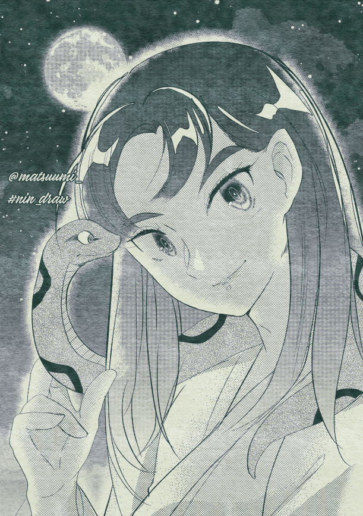
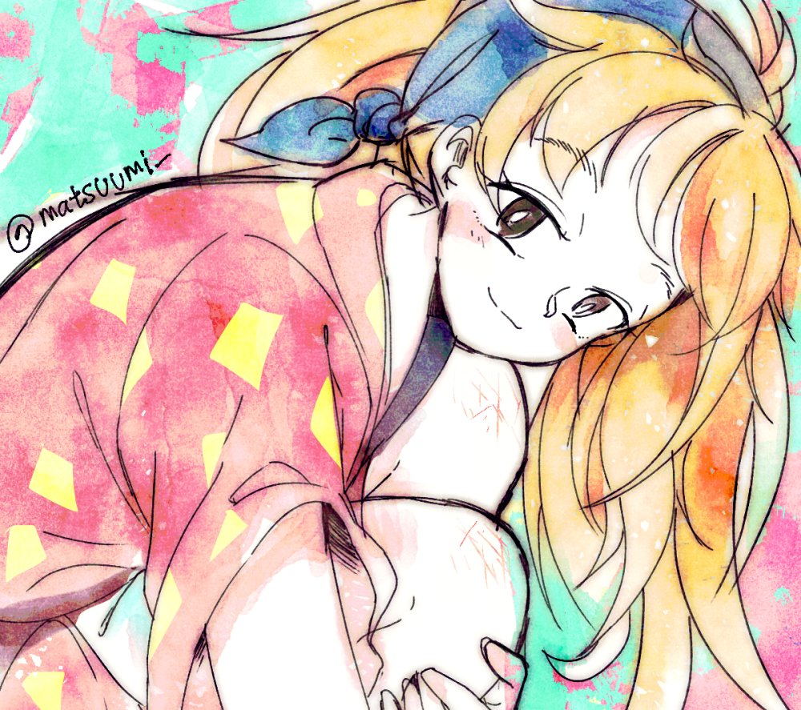
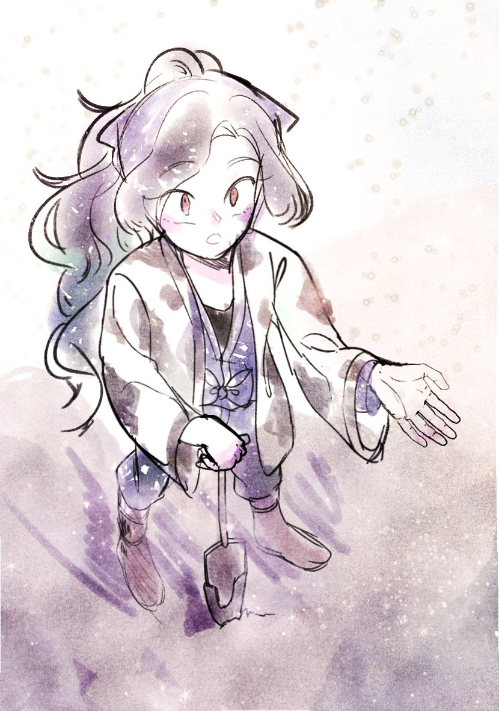
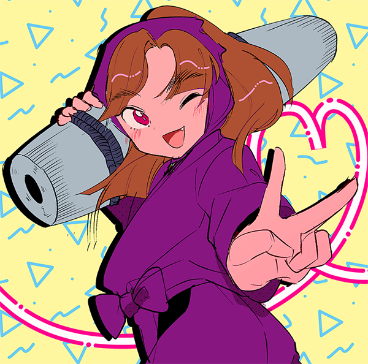
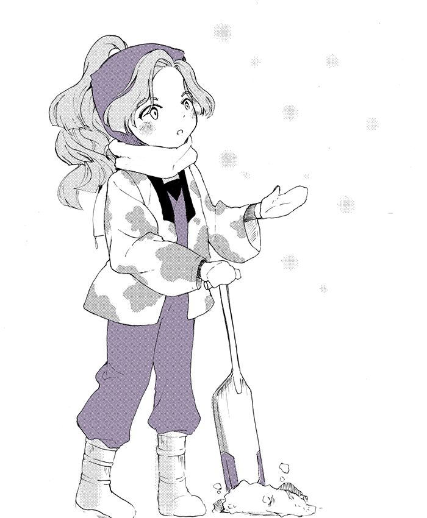
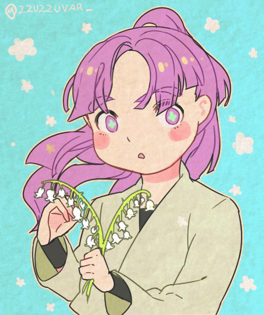
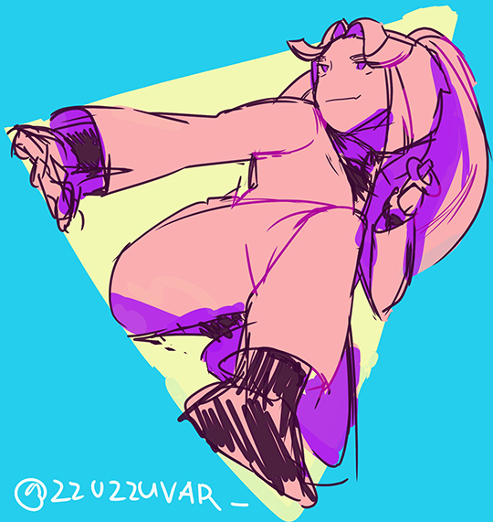

닌드로 모음
(210506 추가)
↑new
↓old

뱀같은 눈이 그리고 싶어서 마고헤이날 참가함

타카마루
저 무릎 상처 설정 너무 에로하고 반칙이라고 생각해요

아랫쪽에 그린 아야베의 리메이크 버전

미키티였던 날~원본은 다리까지 있는데 넘 맘에안들어서 자른 ㅠㅠ

아야베. 원본은 컬러였는데 너무 구려서 흑백으로 다시 발랐어요
3로. 원래 따로따로 그렸던 걸 하나로 합쳤어요

카즈마

타키